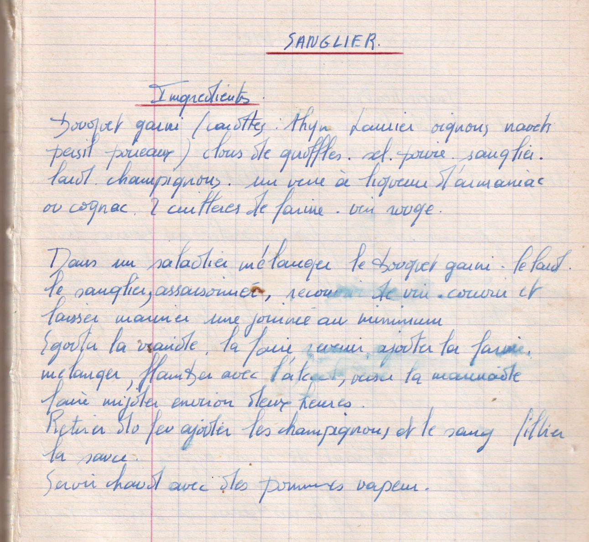

Sanglier

LISTE DES INGREDIENTS
- Bouquet garni (carottes thym laurier oignons navets persil poivreaux)
- Clous de giroffles
- Sel, poivre
- Sanglier
- lard
- Champignons
- Un verre de liqueur d'armagnac ou cognac
- 2 cuillères de farine
- Vin rouge
PREPARATION
- Dans un saladier mélanger le bouquet garni, le lard, le sanglier, assaisonner
- Recouvrir de vin
- Couvrir et laisser mariner une journée au minimum
- Egoutter la viande/li>
- la faire revenir
- Ajouer la farine, mélanger
- Flamber avec l'alcool
- Verser la marinade
- Faire mijoter 2 heures
- Retirer du feu, ajouter les champignons et le "sang ?"
- Filtrer la sauce
- Servir chaud avec des pommes de terre